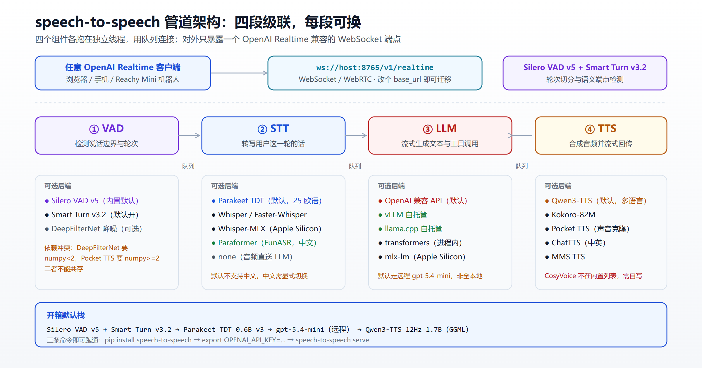
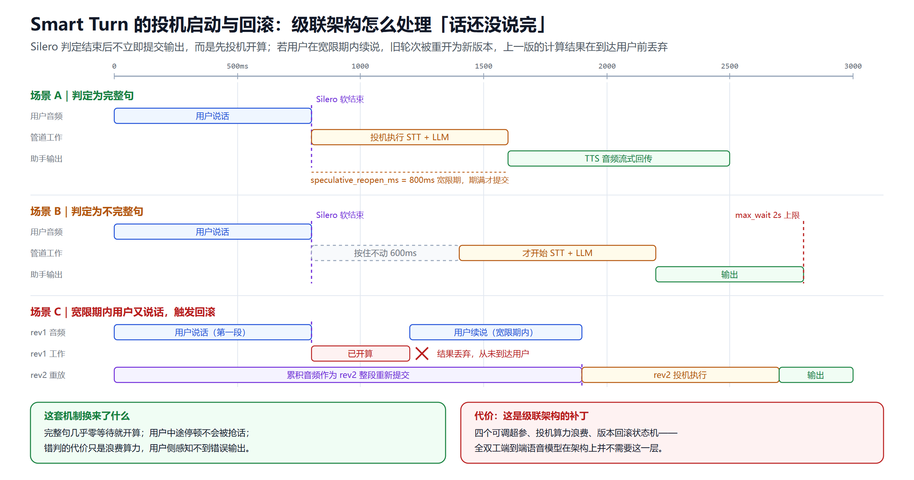
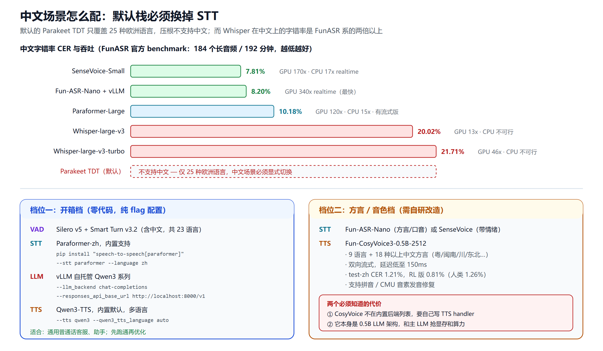

自建语音 Agent 实战指南：HuggingFace speech-to-speech 从部署到中文适配
托管语音 API 的账单长什么样？按业内实测，OpenAI gpt-realtime 上一通典型对话大约 每分钟 0.30 美元——音频输入 32 美元/百万 token，输出 64 美元/百万 token。多家评测机构给出的结论更直白：广告标价是虚的，真实全包成本普遍是标价的 2 到 3 倍。
于是很多团队都在问同一个问题：能不能把这套东西搬回自己机器上？
HuggingFace 的 speech-to-speech 给出的答案有点特别。它不试图做一个更好的语音编排框架去和 Pipecat、LiveKit 拼功能，而是选了一条更狠的路——实现一个协议级兼容 OpenAI Realtime 的自托管端点。你的客户端代码一行不用改，把 base_url 从 OpenAI 指向自己的机器，就完事了。
需要先纠正一个普遍印象：如果你对这个项目的记忆停留在 2024 年那个「串起几个模型的语音 Demo」，那已经完全过时了。今天它是 数千台 Reachy Mini 桌面机器人的生产对话后端，pip install 就能装，README 上挂着 GitHub Trending 当日第一的徽章。
本文做四件事：拆解架构、讲清它最硬的 Smart Turn 机制、帮你看清那组被到处引用的 Qwen3-TTS 性能数据该怎么用、给出可落地的中文配置方案。
一、三条命令跑通，以及默认栈的真相
先看最短路径：
pip install speech-to-speech
export OPENAI_API_KEY=...
speech-to-speech serve
这会在 ws://localhost:8765/v1/realtime 起一个 OpenAI Realtime 兼容服务。另开一个终端就能对话：
speech-to-speech talk --url ws://127.0.0.1:8765/v1/realtime
想一条命令同时起服务端和麦克风客户端，用 speech-to-speech local。
三个命令的分工很清晰：
| 命令 | 行为 | 什么时候用 |
|---|---|---|
serve |
只跑管道服务，走 WebSocket / WebRTC | 你在给 App 或设备做后端 |
talk |
只跑打包好的麦克风/扬声器客户端 | 你要连一个已存在的 Realtime 服务 |
local |
进程内组合前两者，走本地回环 | 你想一条命令搞定全部 |
serve 默认绑 127.0.0.1，要暴露到网络得显式传 --host 0.0.0.0。旧的 --mode 参数已废弃，迁移期内还能用但会打警告。
这里有个容易误解的地方：项目主打「开源本地」，但默认配置里 LLM 走的是远程 OpenAI gpt-5.4-mini。开箱即用的那条路并不是全本地栈。真要全本地，得自己额外接一个推理服务，比如 llama.cpp：
# 终端 1
llama-server -hf ggml-org/gemma-4-E4B-it-GGUF -np 2 -c 65536 -fa on --swa-full
# 终端 2
speech-to-speech serve \
--model_name "ggml-org/gemma-4-E4B-it-GGUF" \
--responses_api_base_url "http://127.0.0.1:8080/v1" \
--responses_api_api_key ""
配好之后可以彻底断网运行，但必须先联网跑一次完整配置，让它把 STT、TTS、Silero VAD、NLTK、Smart Turn 这些资源缓存下来，之后再设 HF_HUB_OFFLINE=1。
二、架构：四段级联，每段可换

管道是四个组件的级联，每个跑在自己的线程里，用队列连接：
- VAD：Silero VAD v5 检测说话边界和轮次切换
- STT：转写用户这一轮，可选实时增量转写
- LLM：流式产出文本和工具调用
- TTS：合成音频流式回传
组件可选范围相当宽：
| 环节 | 默认 | 其他选项 |
|---|---|---|
| VAD | Silero VAD v5 | + Smart Turn v3.2（默认开）、DeepFilterNet 降噪 |
| STT | Parakeet TDT 0.6B v3 | Whisper、Faster-Whisper、Whisper-MLX、MLX-Audio-Whisper、Paraformer（FunASR） |
| LLM | OpenAI 兼容 API | transformers、mlx-lm、vLLM、llama.cpp、HF Inference Providers、OpenRouter |
| TTS | Qwen3-TTS 12Hz 1.7B | Kokoro-82M、Pocket TTS、ChatTTS、MMS TTS |
用 --stt、--llm_backend、--tts 三个开关选择。有个贴心细节：CLI 只为选中的后端构造配置，未激活后端的参数仍被接受但会警告忽略——这让配置文件可以复用而不会炸。
2.1 协议兼容才是核心竞争力
这是最值得单独说的一点。服务端实现了 Realtime 的核心事件集：入向的 input_audio_buffer.append、session.update、conversation.item.create、response.create、response.cancel，出向的语音起止、流式转写、音频增量、工具调用、response.done。
对客户端而言，标准 OpenAI SDK 直接用：
from openai import OpenAI
client = OpenAI(
base_url="http://localhost:8765/v1",
websocket_base_url="ws://localhost:8765/v1",
api_key="not-needed",
)
with client.realtime.connect(model="local") as conn:
conn.send({
"type": "session.update",
"session": {
"type": "realtime",
"instructions": "You are a helpful assistant.",
"audio": {"input": {"turn_detection": {
"type": "server_vad", "interrupt_response": True,
}}},
},
})
for event in conn:
print(event.type)
所以它真正的竞争对手不是 Pipecat 或 LiveKit Agents，而是 OpenAI 的 API 本身。对比一下几家的定位：
- Pipecat：帧驱动、组合式，像 Unix 管道，你自己攒零件
- LiveKit Agents：焊在 WebRTC 媒体服务器上，给你一个"房间"让 Agent 坐进去
- Vapi / Retell / Bland：托管平台，直接给你成品
- speech-to-speech：一个可自托管的 Realtime 兼容端点，迁移成本接近零
如果你在评估 WebRTC 实时通信这条路，可以对比看 LiveKit 实时语音视频平台的定位差异。
2.2 LLM 代理与一个安全坑
开 --enable_llm_proxy 后，服务端会把它配置的远程 LLM 以普通 OpenAI 端点暴露出来，让客户端跑摘要、起标题这类旁路任务，和语音对话完全并发、不会被新语音打断。
但这里有个必须注意的安全问题：README 明确写了，这个代理自身不做任何认证、也不做任何限流。只能在可信网络里开，或者放在一个负责访问控制的网关后面。官方的 s2s-endpoint 副本就是这样的网关——它只对用 HF token 创建会话的客户端开放这些路径，校验 API key 并按用户限流。自建时如果直接开着这个 flag 暴露到公网，等于把你的 LLM 额度免费送人。
这类问题在 Agent 系统里很常见，可以参考 Agent 治理与可观测性的隐性成本里的讨论。
三、Smart Turn：级联架构如何处理「话还没说完」
这是整个项目技术含量最高的部分，也是级联路线最难做对的一环。
问题很实在：纯 VAD 只能判断「有声/无声」，判断不了「说完没说完」。用户说「我想订一张去北京的……嗯……高铁票」，中间那个停顿如果被当成轮次结束，Agent 就会抢话。
speech-to-speech 的方案是叠一层 Smart Turn v3.2——一个语义 VAD，直接分析原始波形（不是转写文本）来判断轮次是否结束。架构是 Whisper-Tiny encoder 加一个二分类头，BSD 2-Clause 许可，支持 23 种语言，包含中文。基础包已经带了量化的 CPU 运行时，默认开启。

机制分三种情况：
完整句：Silero 判定结束后，STT/LLM 立即投机开算，但输出要等 --speculative_reopen_ms（默认 800ms）宽限期满才提交。
不完整句：先等 --smart_turn_incomplete_delay_ms（默认 600ms）再启动 STT/LLM，输出还要受 --smart_turn_max_wait_ms（默认 2 秒）门控。
宽限期内用户又说话：这是最精妙的一步。旧轮次被重开为一个新 revision，累积音频整段重新提交，上一版的计算结果在到达用户之前就被丢弃。
换来的效果是：完整句几乎零等待就开始算，用户中途停顿不会被抢话，而判错的代价仅仅是浪费一点算力——用户侧感知不到错误输出。
调优主要靠 --smart_turn_threshold（默认 0.5），阈值提高会让模糊的停顿更倾向于走那条更长的投机宽限路径。
但要诚实地看代价：四个可调超参、投机造成的算力浪费、一套版本回滚状态机——这些都是级联架构为了模拟人类轮次交接打的补丁。像 Moshi（Kyutai）这类全双工端到端语音模型，原生同时听说、直接处理语音 token，架构上根本不需要这一层。级联还有个天生短板：副语言信息（情绪、语气、笑声）在转成文本那一刻就丢了。
这是路线选择，不是优劣问题。级联的好处是每段都能换、能调试、能复用成熟组件；端到端的好处是架构干净、副语言信息保留。至于两条路线更宏观的对比，可以看从 LLM 到 Agent 的范式转移。
四、默认 TTS 的性能真相：一个值得学习的优化故事
默认 TTS 是 Qwen3-TTS。关于它的性能，网上流传最广的是 HF 员工 andimarafioti 在 faster-qwen3-tts 里放出的一组数据。这组数据的故事性比数字本身更值得说。
起点是一个尴尬的落差。 Qwen 官方放出的推理代码，在 Jetson AGX Orin 上生成 1 秒音频要花 5.7 秒——慢到根本没法做对话。这不是模型的问题，是研究参考实现和生产引擎之间的鸿沟。
优化之后：RTX 4090 上首音 152ms，音频生成速度达到实时的 5.5 倍；Jetson 上首音从 2.6 秒压到 556ms，端侧语音合成从不可用变成可用。
（顺带说明：这份报告里的"RTF"是"音频时长÷耗时"，数字越大越快。这和 ASR 圈子的习惯正好相反，别和后文 FunASR 的"170x"混着比，一个是合成一个是识别。）
真正有意思的是怎么做到的：没有重写任何 attention 层，没用 vLLM，没用 Flash Attention，也没手写 CUDA kernel。只用了 transformers 自带的 StaticCache，加上 torch.cuda.CUDAGraph 把模型自己的 forward 包起来。
因为瓶颈压根不在算力上，而在 kernel launch 开销——每个解码步要发射约 500 个小 GPU 操作，Python 循环里 GPU 大半时间在等 CPU 发指令。CUDA Graph 把这串操作录一次、之后直接重放，开销就消失了。
而作者列出的失败尝试，比成功方案更值钱：
- 换 attention 后端（eager / SDPA / Flash Attention 2）：RTF 一模一样。attention 根本不是瓶颈
- 手写融合 kernel：RMSNorm 快了 8.4 倍、SiLU 快 2.2 倍，端到端只提升 1.25 倍——这些算子只占约 4% 的计算量
- torch.compile：为了在 Jetson 上跑通还修了三个 Triton 兼容问题，结果零提升，动态 KV cache 形状把编译器直接打败
一句话总结：方向错了，努力白费。 这个教训对任何做推理优化的人都成立。
别被这组数字带跑偏
数据本身是可信的——我把两张表的 16 组加速比都验算过，标注和原始数值完全对得上。但拿它做决策前，有三个折扣必须打：
第一，「97ms 首包」不是端到端首音。 这个被到处引用的数字来自 Qwen3-TTS 技术报告，指的是那个 12.5Hz tokenizer 的首包发射时间，属于组件级指标。实测最好的端到端首音是 152ms。两者测的不是同一个东西，所谓"超越官方宣称"其实不成立。
第二，所有数据都是单流的。 这是最容易踩的坑："实时的 5.5 倍"不等于一张卡能同时服务 5 路对话。 报告只提了"H100 强在批处理"，没给任何并发数字。而并发容量恰恰是你算 GPU 账时最需要的那个数——只能自己压测。
第三，对比基线本身带了优化。 报告里的基线首音取自社区的流式 fork（官方代码不支持流式），而那个 fork 的部分加速依赖 torch.compile、在 Jetson 上复现不出来。换句话说，在能用 torch.compile 的平台上，真实提升幅度会比表里小。
另外报告里几处加速比区间前后口径不一（自述"1.2x 到 8.7x"，但表格里实际是约 1.7x 到 9.8x），大概是版本更新没同步，引用时按表格数值走就行。
最后一个实用结论：流式分块越小，首音越快但吞吐越低。 对话场景优先压首音，在 Jetson 这类设备上分块取 2 是能保持实时的下限，性能更强的 GPU 可以取 1。这条线索和端侧大模型的进展是同一个方向。
五、中文 pipeline 怎么配

先说结论：默认栈在中文场景下不可用，必须换 STT。
默认的 Parakeet TDT 只覆盖 25 种欧洲语言，压根不支持中文。而如果你顺手换成 Whisper，也不是个好选择——看 FunASR 官方 benchmark（184 个长音频，192 分钟）：
| 模型 | 中文 CER ↓ | GPU 速度 | CPU 速度 |
|---|---|---|---|
| SenseVoice-Small | 7.81% | 170x realtime | 17x realtime |
| Fun-ASR-Nano + vLLM | 8.20% | 340x realtime | — |
| Paraformer-Large | 10.18% | 120x realtime | 15x realtime |
| Whisper-large-v3 | 20.02% | 13x realtime | 不可行 |
| Whisper-large-v3-turbo | 21.71% | 46x realtime | 不可行 |
中文上 Whisper 的字错率是 FunASR 系的两倍以上，速度还慢一个量级。FunASR 官方的总结很直接：它们的模型在 CPU 上跑得比 Whisper 在 GPU 上还快。原因是 SenseVoice / Paraformer 走非自回归架构——一次前向就出完整转写，不像 Whisper 逐 token 解码。
顺带一个值得注意的反差：SenseVoice 的 CER（7.81%）比被列为旗舰的 Fun-ASR-Nano（8.20%）还低。Nano 的优势在方言覆盖和长音频稳定性，且强制要 GPU。选型时别只看旗舰标签。中文 ASR 的更多横向对比可以看商业与开源中文 ASR 方言实测。
5.1 档位一：开箱档（零代码，纯 flag 配置）
好消息是 Paraformer 是内置支持的，不用改代码：
pip install "speech-to-speech[paraformer]"
先用 vLLM 起一个 Qwen3：
vllm serve Qwen/Qwen3-4B-Instruct-2507 --port 8000
然后把三段都配成中文栈：
speech-to-speech serve \
--stt paraformer \
--language zh \
--llm_backend chat-completions \
--model_name "Qwen/Qwen3-4B-Instruct-2507" \
--responses_api_base_url "http://localhost:8000/v1" \
--responses_api_stream \
--tts qwen3 \
--qwen3_tts_language auto \
--enable_live_transcription
几个关键点：
- 用
chat-completions而不是responses-api。 README 明确指出（对应 issue #312）：部分 vLLM 构建的 Responses 流式工具调用路径不可靠，而 Chat Completions 的工具调用流式很稳。这两个后端共用同一组--responses_api_*连接参数。 - 考虑关掉推理模式。 语音对话对延迟极敏感，加
--responses_api_reasoning_effort none可以在那些「模型模板里enable_thinking开关不生效」的服务上强制关掉思维链。 - VAD 层不用动。 Smart Turn v3.2 支持中文，Silero 本身与语言无关。
- TTS 也不用动。 Qwen3-TTS 本身多语言，
--qwen3_tts_language auto就够了。
要单独指定 Whisper 走中文（比如你更看重方言外的通用性），可以：
speech-to-speech serve \
--stt whisper \
--stt_model_name large-v3 \
--language zh
想让 STT 自动识别语种再转给 LLM，把 --language 设成 auto。可选加 --enable_lang_prompt 追加一句「请用某语言回复」的指令，默认关闭——大模型通常能从上下文推断语言，但小模型可能需要这个显式提示。
关于 vLLM 本身的部署调优，可以参考主流推理框架横向对比和私有化推理部署实践。模型选型上，开源大模型选型指南可以帮你决定用哪个 Qwen 尺寸。
5.2 档位二：方言 / 音色档（需自研改造）
如果业务要求方言覆盖或者高质量音色克隆，就得上 Fun-CosyVoice3-0.5B-2512。它的能力确实强：
- 9 种语言 + 18 种以上中文方言/口音：粤语、闽南、四川、东北、陕西、山西、上海、天津、山东、宁夏、甘肃等
- 双向流式：文本流入、音频流出同时进行，延迟低至 150ms
- 音质：test-zh CER 1.21%，RL 版本 0.81%（人类基线 1.26%）；说话人相似度 78.0%
- 发音修复：支持中文拼音和英文 CMU 音素级别的发音修正——这对生产环境的可控性很关键，专有名词读错可以直接修
- 部署加速：支持 vLLM 0.11.x+（V1 引擎）和 0.9.0，另有 TensorRT-LLM 路径（CosyVoice2 的 LLM 部分可获约 4 倍加速）
但必须清楚两个代价：
① CosyVoice 不在 speech-to-speech 的内置后端列表里。 内置 TTS 只有 Qwen3-TTS、Kokoro、Pocket TTS、ChatTTS、MMS——没有 CosyVoice 的 flag，要用就得自己写一个 TTS handler。好在项目本身「为易修改而设计」，参照现有 handler 实现一个不算大工程，但这是实打实的开发量，不是配置项。
② 它本身就是个 0.5B 的 LLM 架构，会和主 LLM 抢显存和算力。 做单机部署的显存预算时必须把这块算进去。
TTS 选型的更多维度可以参考商业与开源 TTS 横向对比。
5.3 中文栈的两个部署坑
CUDA 版本。 Qwen3-TTS 的 GGML 后端来自 faster-qwen3-tts[ggml]，其 PyPI 上的默认 qwentts-cpp-python wheel 只针对 CUDA 12.8。如果你的机器不是这个运行时，得先从 HF wheelhouse 装匹配版本：
# CUDA 13.x
pip install "qwentts-cpp-python==0.3.1+cu130" \
-f https://huggingface.co/datasets/andito/qwentts-cpp-python-wheels/tree/main/whl/cu130
# CUDA 12.4
pip install "qwentts-cpp-python==0.3.1+cu124" \
-f https://huggingface.co/datasets/andito/qwentts-cpp-python-wheels/tree/main/whl/cu124
pip install speech-to-speech
依赖冲突。 DeepFilterNet（VAD 的可选降噪）要求 numpy<2，而 Pocket TTS 要求 numpy>=2——两者无法共存。官方建议只在确定不用 Pocket TTS 的环境里手动装 DeepFilterNet。
六、什么规模值得自建
这是最该冷静算的一笔账。
托管侧成本：gpt-realtime 音频输入 32 美元/百万 token、输出 64 美元/百万 token，缓存输入可降到 0.40 美元/百万。典型对话全包约 每分钟 0.30 美元。多份评测强调真实成本普遍是标价的 2-3 倍，因为上下文会随对话累积。AssemblyAI 自家的对比给出了 4.50 美元/小时 对 约 18 美元/小时 的量级差异。
经验阈值：有分析给出一个可操作的分界线——月话务量低于约 1 万分钟，买托管平台更划算；高于这个量，自建更优。规模化之后，框架路线相比托管平台每通成本可低 60-80%，但低量时把工程人力折算进去，托管会赢。
别忘了算这些隐性成本：
- GPU 常驻费用：自建是固定成本，不管有没有话务都在烧。有测算显示自托管 Whisper 起步就是每月数百美元量级
- 并发容量未知：前面说过，所有公开性能数据都是单流的。你需要自己压测才知道一张卡能扛几路
- 运维复杂度：CUDA 版本、依赖冲突、模型缓存、离线资源预热，每一项都是真实工时
- 调优是持续投入：Smart Turn 那四个超参、VAD 阈值、分块大小，都需要按你的场景反复调
什么情况下自建的理由压倒成本考量：
- 数据合规：音频不能出境或不能离开自有机房
- 完全离线：车载、工厂、涉密环境
- 边缘部署：Jetson 这类设备上云延迟根本不可接受
- 避免供应商锁定：协议兼容让你随时能切回去，这个可选权本身有价值
关于锁定风险的系统性思考，可以看反供应商锁定的 AI 工作流设计。如果你的场景是客服，智能客服 Agent 全景里有更贴近业务的成本模型。
七、真实产线：数千台机器人在跑
值得一提的是，这套栈不是实验室玩具。它是 Reachy Mini 桌面机器人的生产对话后端。按 HuggingFace 创始人 clem 的博文，在又发出近 3000 台之后，装机量已接近 1 万台，后续 30 天还有 1000 多台要发。
这个场景的约束很有代表性：树莓派 CM4 级别的算力、必须离线可用、隐私敏感（官方明确说机器人默认不存储不传输个人数据）。能在这种条件下跑起来，反过来验证了这套架构在边缘侧的可行性。
对具身智能这条线感兴趣的，可以看物理 AI 与世界模型以及人形机器人操作系统之争。
小结
speech-to-speech 的价值不在于技术架构比 Pipecat 或 LiveKit 更先进——四段级联是行业通用做法。它的差异化在协议层的选择：实现一个 OpenAI Realtime 兼容的自托管端点，让迁移成本降到改一个 URL。
几条实操结论：
- 想快速验证：三条命令跑通，但记住默认 LLM 走远程，不是全本地栈
- 中文场景：必须换掉默认 STT。开箱档用
--stt paraformer+ vLLM/Qwen3 + Qwen3-TTS，纯 flag 配置零代码；要方言和音色才上 CosyVoice 3，代价是自写 handler 加抢显存 - 性能数据：Qwen3-TTS 那组数字可信，但 97ms 是组件指标不是端到端首音，而且全是单流——并发容量必须自己压测
- 成本决策：月话务量 1 万分钟上下是个粗略分界线。低于此，托管的工程省心值更多钱
- 架构认知：Smart Turn 的投机加回滚很精巧，但它本质是级联架构为模拟人类轮次交接打的补丁。端到端全双工模型不需要这层——这是路线取舍，不是谁更先进
如果你正在选型，我的建议是：先用它的开箱配置跑通链路验证体感，同时用真实并发压测算清 GPU 账。协议兼容这个设计让你随时能退回托管方案，这个后路本身就降低了试错成本。
免责声明
本文性能数据与成本数字均来自公开资料与第三方评测，测量条件、硬件配置、软件版本差异都会显著影响结果，不构成任何选型承诺。文中对 Qwen3-TTS 性能数据的说明基于公开报告的内部一致性核对，指出的口径差异可能源于版本更新未同步，不代表对作者工作的否定——该项目的优化思路和失败尝试记录都很有价值。价格信息随厂商调整变动频繁，请以官方最新报价为准。生产部署前请在自己的硬件和真实并发下完成压测。开启 --enable_llm_proxy 涉及实际安全风险，请务必按官方要求置于网关之后。
参考来源
- huggingface/speech-to-speech — GitHub 仓库
- speech-to-speech README（完整 CLI 与后端参考）
- Reachy Mini goes fully local — HuggingFace 博客
- Introducing the agentic robotics appstore for 10,000 Reachy Minis — clem, HuggingFace
- Deploying Speech-to-Speech on Hugging Face
- faster-qwen3-tts 性能报告 — andimarafioti
- Qwen3-TTS Technical Report — arXiv 2601.15621
- pipecat-ai/smart-turn — 语义 VAD 模型与语言支持
- pipecat-ai/smart-turn-v3 — HuggingFace 模型卡
- FunASR — 工业级语音识别工具包与 benchmark
- FunASR vs Whisper 中文实测对比
- CosyVoice — FunAudioLLM 官方仓库与评测表
- CosyVoice 3 论文 — arXiv 2505.17589
- OpenAI Realtime API 生产实践与定价（2026）— Forasoft
- OpenAI Realtime API 真实成本实测 — HackerNoon
- Agentic Voice APIs 横向对比 — rywalker
- AssemblyAI Voice Agent API vs OpenAI Realtime API
- Vapi vs Pipecat vs LiveKit 框架对比 — AssemblyAI
- Pipecat vs LiveKit Agents 架构差异 — Forasoft
- kyutai-labs/moshi — 全双工端到端语音模型
相关阅读
- LiveKit 实时语音视频 AI 平台入门
- 商业与开源中文 ASR 方言实测对比
- 商业与开源 TTS 横向对比指南
- 主流 LLM 推理框架横向对比
- 私有化推理部署实践：Xinference
- 开源大模型选型指南
- 端侧大模型：Gemma 4 / MiniCPM / Qwen
- 智能客服 Agent 全景图
- Agent 治理与可观测性的隐性成本
- 反供应商锁定的 AI 工作流设计
- 物理 AI 与世界模型
- 人形机器人操作系统之争：VLA vs ROS
推荐搭配装备
善其事，利其器。以下硬件能最大化你的AI体验👇
🔗 通过以上链接购买可支持本站持续运营 🙏